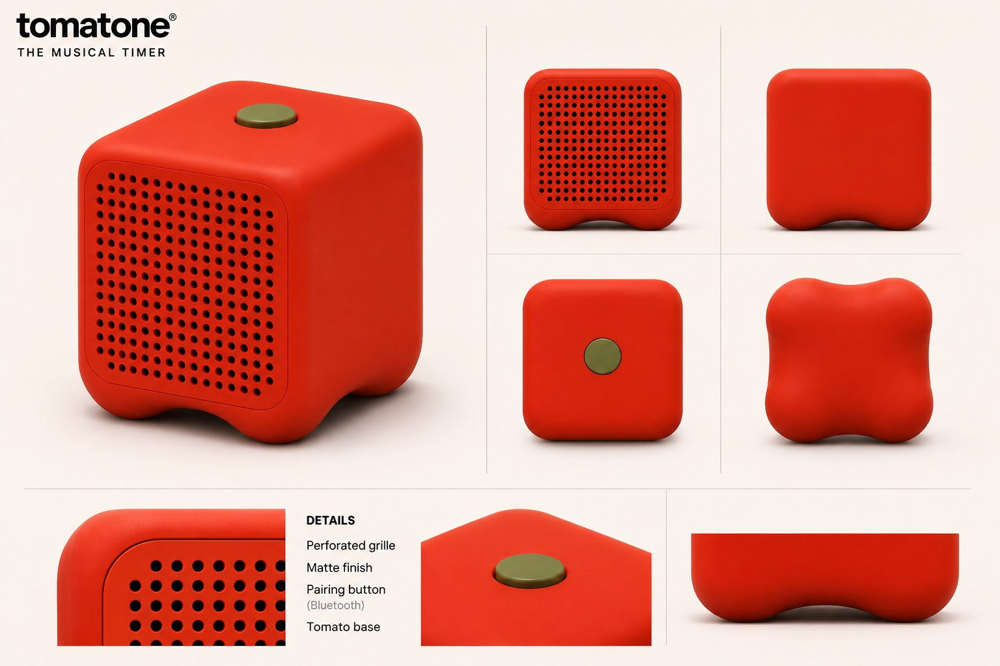
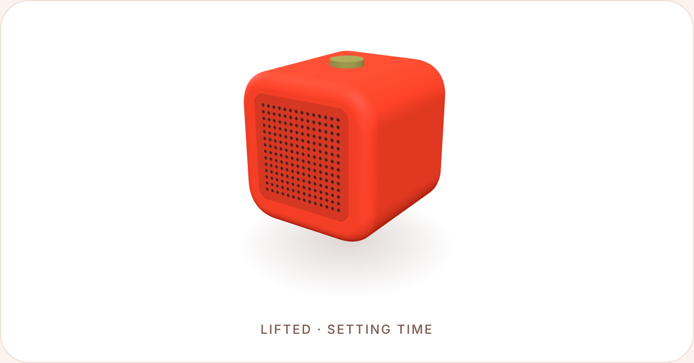
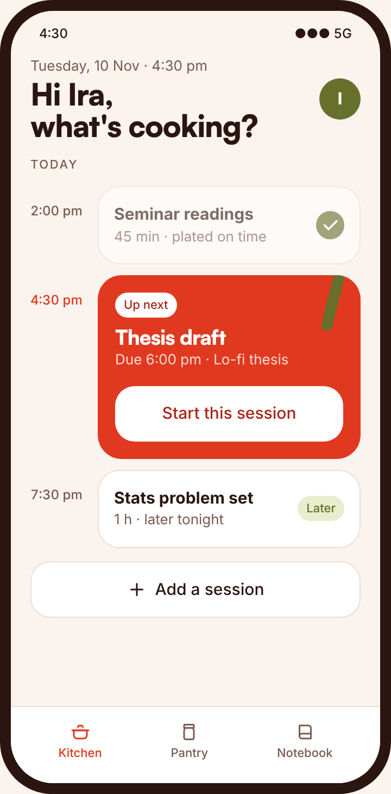
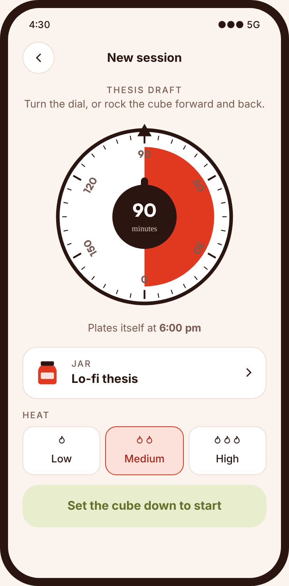
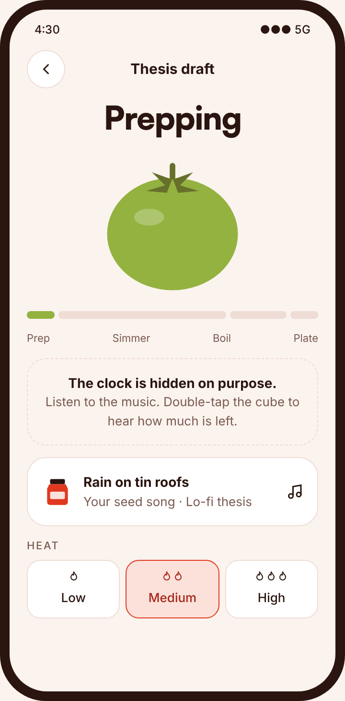
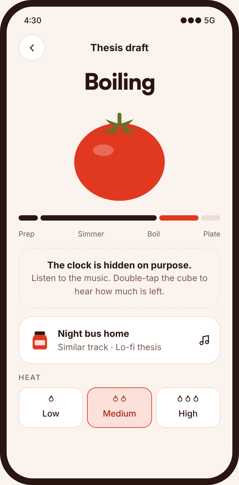
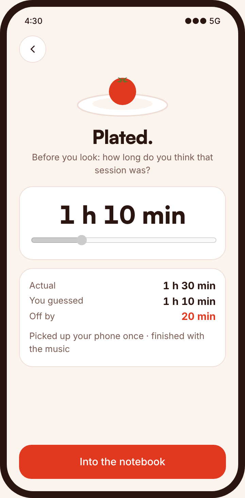
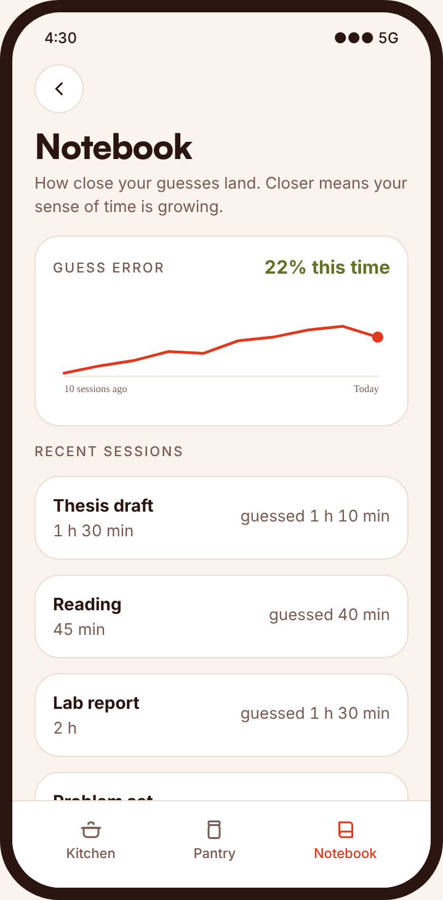

Design assessment · Atul
A study timer you hear instead of watch. It plays your music and lets the music tell you how much time is left.

01 · Where it started
Nothing interrupted me. I just never felt the time go. People with ADHD call this time blindness, and most students know a milder version of it. A friend of mine lives with the full version, and watching it up close was frustrating for both of us.
The three words led here
A session has a shape you could map. Our sense of time could be extended. And if you could take in the whole session at once, that would be the panoramic view we're missing.
Problem statement
How might students feel time passing while they're absorbed in work, so they notice drift before it costs them?
02 · What the research says
A meta-analysis of 55 studies found timing deficits across every kind of timing task in people with ADHD.
Marx et al., 2021, JAACAP
84% of students surveyed at UC San Diego listen to music during academic work, at least sometimes. Young adults with ADHD do it even more, and prefer stimulating music.
UCSD Public Health, 2025 · Gosselin et al., Frontiers in Psychology
People judge time as shorter while listening to music they like. Tempo has the strongest effect on how long time feels.
Droit-Volet et al., 2013, Frontiers in Psychology
The music students focus to is quietly hiding the time from them.
Every tool on the market asks you to look at a clock. Looking is exactly what you stop doing when you're absorbed.
03 · What already exists
| Product | How it signals time | Where it falls short |
|---|---|---|
| Time Timer, Tiimo | A visual countdown | Only works when you look at it |
| Takt (2016), Tikli (2025) | Haptic pulses on the wrist at fixed intervals | A steady pulse fades into the background |
| Endel, Brain.fm | Focus music with a timer beside it | The music never changes to show time passing |
| WonderTimer | A gesture-controlled timer cube | Silent until the alarm |
| Tomatone | The music you already work to, changing as the deadline nears | Gets more noticeable as time runs out |
04 · The concept
You set a session on the cube, put your phone away, and work. The music settles you in, holds steady, then picks up as the deadline gets close. You know roughly where you are without checking.
Built on a habit students already have. Nothing new to remember to check.
Gets louder in meaning, never in volume. The signal grows as time runs out instead of fading.
A sense you learn. David Eagleman's work shows the brain learns new signals that change with the world. Here, the world is your deadline.

05 · How time becomes music
Your own favourite songs ease you in.
A steady beat that stays out of your way.
Faster, brighter tracks, with a soft tick underneath.
A closing track that resolves right on time.
Why tempo, not volume. In research on warning sounds, speed is the strongest signal of urgency. Louder sounds mostly come across as annoying. So Tomatone speeds up and never gets louder.Hellier, Edworthy & Dennis, 1993, Human Factors
Your songs aren't altered. Tomatone picks and orders tracks by tempo, then plans the queue backwards so the last song ends on your deadline. If it feels like too much, tilt the cube to turn down the heat.
06 · The cube
Picking up your phone mid-session dips the music for a moment. No notification, just a nudge back.
07 · One session, start to finish






08 · Learning a new sense
The music changes alongside a session of known length.
Certain tempos start to mean "nearly done."
A better sense of time, possibly even without the cube. This is what the Notebook's guessing game measures.
People learn the music's cues within a few weeks. Rising tempo creates urgency without anxiety. Third-party tempo data can stand in for Spotify's audio features, which closed to new apps in November 2024.
Run a two-week study with five students who track their guesses. Partner with an adaptive music engine like Endel so the music itself can change tempo. Compare silent mode with music for people who work in silence.
Droit-Volet, Ramos, Bueno & Bigand (2013). Music, emotion, and time perception. Frontiers in Psychology.
Gosselin et al. Listening habits and subjective effects of background music in young adults with and without ADHD. Frontiers in Psychology.
Hellier, Edworthy & Dennis (1993). Improving auditory warning design. Human Factors 35(4).
Marx, Cortese, Koelch & Hacker (2021). Meta-analysis: altered perceptual timing abilities in ADHD. JAACAP.
UC San Diego Public Health capstone (2025). The Mozart Effect: music and academic work.
Takt, KTH (CHI 2016) · Tikli, James Dyson Award 2025 · Endel · Brain.fm · WonderTimer · Time Timer · Tiimo.